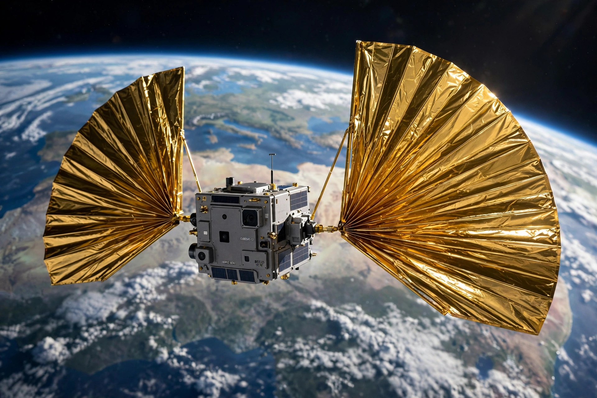

| Founded | 1980 |
| Founders | Carl Sagan, Bruce Murray, Louis Friedman |
| Headquarters | Pasadena, California, US |
| Type | Non-profit space advocacy organisation |
| CEO | Bill Nye (since 2010) |
| Focus | Space exploration advocacy, citizen science, planetary defence |

The Planetary Society is an American non-profit organisation dedicated to advancing space science and exploration. Founded in 1980 by Carl Sagan, Bruce Murray and Louis Friedman, it is the largest space-interest advocacy group in the world, funded by its members and donors, and headquartered in Pasadena, California.
The Society was created at a time of shrinking NASA budgets to mobilise public support for planetary missions. Sagan served as its first president, using his popularity from the television series Cosmos to attract tens of thousands of members. The Society publishes The Planetary Report magazine, advocated for missions to Mars and the outer planets, and supported projects such as the search for extraterrestrial intelligence (SETI) and near-Earth object surveys.
The Society sponsors member-funded technology and science projects. Its best-known effort is LightSail, a cubesat solar-sailing program: LightSail 1 completed a test flight in 2015, and LightSail 2, launched in June 2019, successfully raised its orbit using only sunlight pressure — the first controlled solar-sail flight in Earth orbit by a small spacecraft. Earlier, the Society backed the Russian Cosmos 1 solar sail attempt (lost in a 2005 launch failure) and contributed the Living Interplanetary Flight Experiment (LIFE) to the failed Phobos-Grunt mission.
The Society lobbies the United States Congress for NASA funding, organises an annual "Day of Action", and campaigns for planetary defence against asteroid impacts and for the search for life on Mars, Europa and Enceladus. Since 2010 its chief executive has been scientist and television presenter Bill Nye.